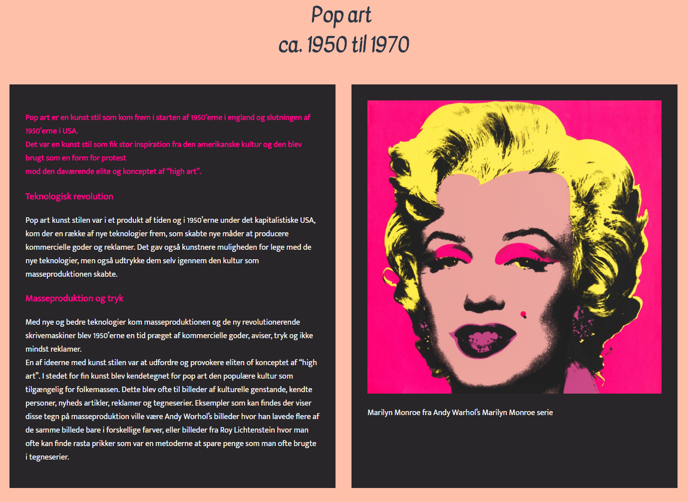

Om mig
Mit navn er Tobias Jung Zagal og jeg er 22 år. Jeg har i mange år arbejdet med forskellige programmer fra alt som photo redigering, video redigering, server opsettelse, grafisk design, command bot programmering, spiludvikling og meget mere.
Responsive_site_v3
Efter vi var færdige med studiestart prøven skulle vi arbejde videre med vores site. Opgaven hed at vi skulle gøre vores side responsive, så den virkede både på pc skærme, men også på mobiler. I opgaven skulle vi bruge noget meret avdenceret html og css for at få siden til at "flexe". En af de ting vi brugte var display: flex functionen, men også medie quries til at ændre størrelsen på elementer på siden.
Everydayproject
I denne opgave skulle vi lave en video fir CPH:Dox som havde fokus på hverdags livet for ordinere folk. Vi endte up med at få kontakt til en af med ejerne i Too Good Too Go. Vi lavede der efter en video om hverdags livet i Too Good Too Go